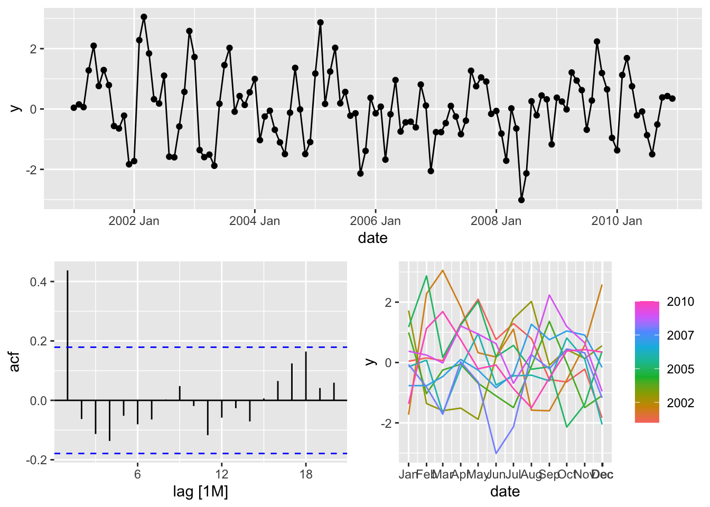
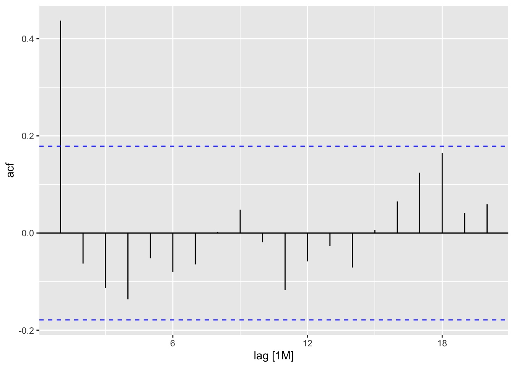
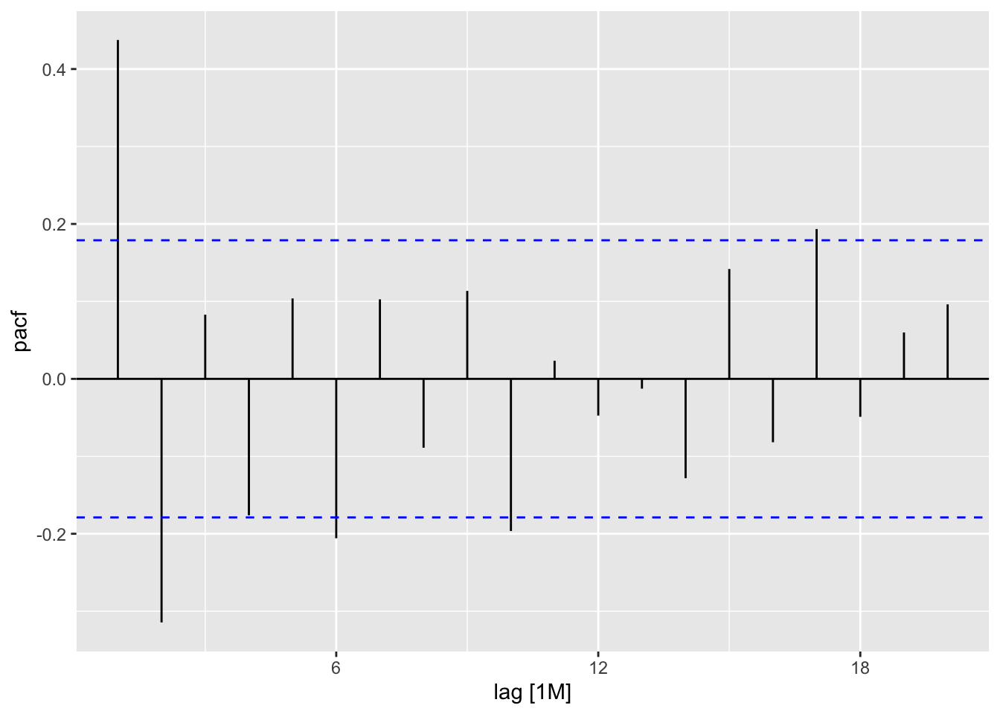
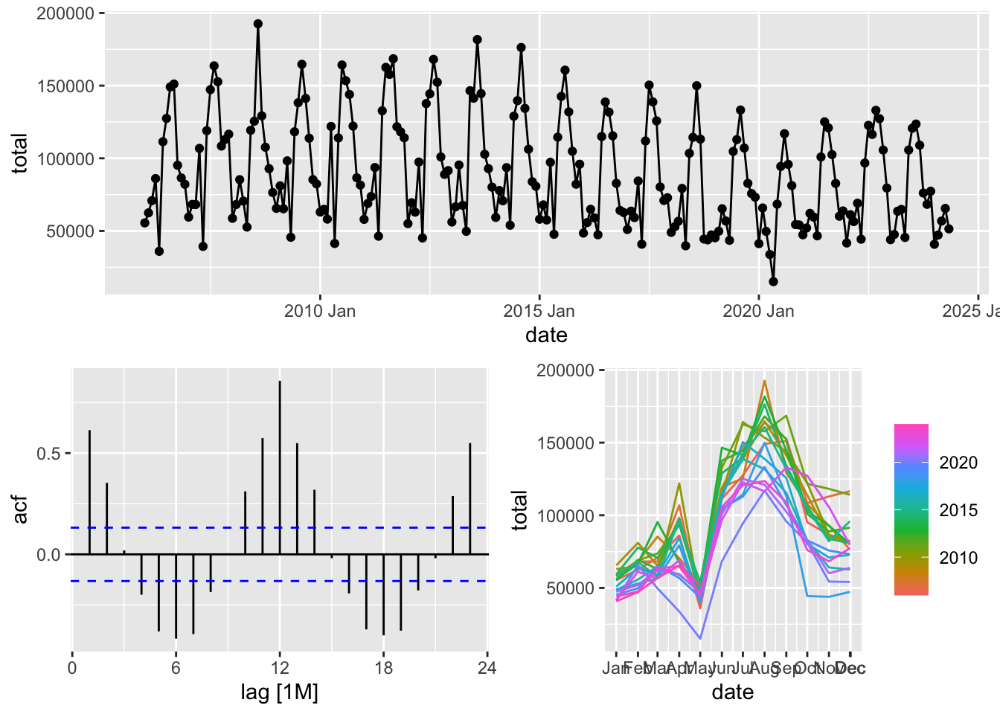

Chapter 4 Stationary Process
Stationary process is a random process with constant characteristics.
\[ \begin{cases} \mathbb E(y_t) = \mu \\ Cov(y_t, y_{t+k}) = \gamma_k \end{cases} \] + Random walk is an example of non-stationary process + Random sample is an example of stationary process
4.1 MA processes
For a process \(y_t\) where \(t \in \mathbb Z\), lagged process \(Ly_t\) is the same sequence of values with shifted index:
\[ Ly_t = y_{t-1} \]
\[ L^2y_t = L \cdot L \cdot y_t = L \cdot y_{t-1} = y_{t-2} \]
\[ \bigtriangleup y_t = y_t - y_{t-1} = (1-L)y_t \]
Seasonal difference:
\[ \bigtriangleup_{12} y_t = y_{t} - y_{t-12} = (1-L^{12})y_t \]
A process \(y_t\) that can be written as \[ y_t = \mu + u_t +\alpha_1u_{t-1} +...+\alpha_qu_{t-q}, \] where \(\alpha_q \ne 0\) and \(u_t\) is a white noise, we can name \(MA(q)\) process.
ACF of MA(q) process suddenly becomes zero for all lags \(k > q\).
PACF of MA(q) process convergates to zero exponentially fast.
MA(q) process is stationary.
4.2 Examples
data <- tibble(y = arima.sim(n = 120, model = list(ma = 0.9)))
data$date <- yearmonth(ymd('2000-12-01') + months(1:120))
data## # A tibble: 120 × 2
## y date
## <dbl> <mth>
## 1 0.0423 2001 Jan
## 2 0.152 2001 Feb
## 3 0.0609 2001 Mar
## 4 1.28 2001 Apr
## 5 2.10 2001 May
## 6 0.762 2001 Jun
## 7 1.29 2001 Jul
## 8 0.792 2001 Aug
## 9 -0.565 2001 Sep
## 10 -0.645 2001 Oct
## # ℹ 110 more rows## # A tsibble: 120 x 2 [1M]
## y date
## <dbl> <mth>
## 1 0.0423 2001 Jan
## 2 0.152 2001 Feb
## 3 0.0609 2001 Mar
## 4 1.28 2001 Apr
## 5 2.10 2001 May
## 6 0.762 2001 Jun
## 7 1.29 2001 Jul
## 8 0.792 2001 Aug
## 9 -0.565 2001 Sep
## 10 -0.645 2001 Oct
## # ℹ 110 more rows## Plot variable not specified, automatically selected `y = y`
## Response variable not specified, automatically selected `var = y`
## Response variable not specified, automatically selected `var = y`
## Rows: 24,852
## Columns: 4
## $ code <int64> 1000000000, 1000000000, 1000000000, 1000000000, 1000000000, 1000000000, 1000000000, 1000000000, 1000000000, 1000000000, 1000000000, 1000000000, 1…
## $ name <chr> "Алтайский край", "Алтайский край", "Алтайский край", "Алтайский край", "Алтайский край", "Алтайский край", "Алтайский край", "Алтайский край", "Ал…
## $ total <int> 953, 1007, 1311, 1554, 562, 1900, 2338, 3034, 2460, 1762, 1411, 1554, 1069, 1221, 1330, 1774, 609, 2107, 2708, 3272, 2483, 1825, 1721, 1940, 1006, …
## $ date <IDate> 2006-01-01, 2006-02-01, 2006-03-01, 2006-04-01, 2006-05-01, 2006-06-01, 2006-07-01, 2006-08-01, 2006-09-01, 2006-10-01, 2006-11-01, 2006-12-01, 2…ts_marriages <- m |>
mutate(date = yearmonth(date)) |>
as_tsibble(index = date, key = c('code', 'name'))
glimpse(ts_marriages)## Rows: 24,852
## Columns: 4
## Key: code, name [109]
## $ code <int64> 30, 30, 30, 30, 30, 30, 30, 30, 30, 30, 30, 30, 30, 30, 30, 30, 30, 30, 30, 30, 30, 30, 30, 30, 30, 30, 30, 30, 30, 30, 30, 30, 30, 30, 30, 30, 3…
## $ name <chr> "Центральный федеральный округ", "Центральный федеральный округ", "Центральный федеральный округ", "Центральный федеральный округ", "Центральный фе…
## $ total <int> 14845, 16414, 15753, 21803, 9384, 29571, 35691, 39263, 40480, 24137, 21207, 19009, 15433, 17430, 13878, 29703, 10529, 31572, 41328, 42609, 41779, 2…
## $ date <mth> 2006 Jan, 2006 Feb, 2006 Mar, 2006 Apr, 2006 May, 2006 Jun, 2006 Jul, 2006 Aug, 2006 Sep, 2006 Oct, 2006 Nov, 2006 Dec, 2007 Jan, 2007 Feb, 2007 Ma…
rf_train <- rf_m |>
filter(date < yearmonth('2022 May'))
mods <- rf_train |>
model(snaive = SNAIVE(total),
theta = THETA(total),
ma12 = ARIMA(total ~ 1 + pdq(0, 0, 12) + PDQ(0, 0, 0)),
stl_ma = decomposition_model(STL(total ~ season(window = Inf)),
ARIMA(season_adjust ~ 1 + pdq(0, 0, 1:5) + PDQ(0, 0, 0)),
SNAIVE(season_year)))
mods## # A mable: 1 x 6
## # Key: code, name [1]
## code name snaive theta ma12 stl_ma
## <int64> <chr> <model> <model> <model> <model>
## 1 643 Российская Федерация <SNAIVE> <THETA> <ARIMA(0,0,12) w/ mean> <STL decomposition model>## Series: total
## Model: ARIMA(0,0,12) w/ mean
##
## Coefficients:
## ma1 ma2 ma3 ma4 ma5 ma6 ma7 ma8 ma9 ma10 ma11 ma12 constant
## 0.3215 0.1800 0.1616 -0.0455 -0.0636 -0.2656 -0.1575 -0.0969 -0.1656 0.0666 0.2375 0.7986 91320.143
## s.e. 0.0760 0.0763 0.0892 0.0771 0.0765 0.0744 0.0660 0.0680 0.0655 0.0678 0.0827 0.0676 2837.164
##
## sigma^2 estimated as 453863707: log likelihood=-2235.24
## AIC=4498.48 AICc=4500.8 BIC=4544.37## Series: total
## Model: STL decomposition model
## Combination: season_adjust + season_year
##
## ========================================
##
## Series: season_adjust
## Model: ARIMA(0,0,5) w/ mean
##
## Coefficients:
## ma1 ma2 ma3 ma4 ma5 constant
## 0.2911 0.4656 0.4871 0.1537 0.2149 91664.818
## s.e. 0.0700 0.0754 0.0753 0.0644 0.0686 2234.992
##
## sigma^2 estimated as 150483677: log likelihood=-2120.82
## AIC=4255.63 AICc=4256.23 BIC=4278.58
##
## Series: season_year
## Model: SNAIVE
##
## sigma^2: 0## # A tibble: 4 × 12
## .model code name .type ME RMSE MAE MPE MAPE MASE RMSSE ACF1
## <chr> <int64> <chr> <chr> <dbl> <dbl> <dbl> <dbl> <dbl> <dbl> <dbl> <dbl>
## 1 ma12 643 Российская Федерация Test -9318. 29162. 26169. -27.7 41.9 2.09 1.78 0.620
## 2 snaive 643 Российская Федерация Test 4994. 16002. 10150. 3.22 11.8 0.810 0.977 0.580
## 3 stl_ma 643 Российская Федерация Test -8158. 16777. 13970. -11.8 17.9 1.11 1.02 0.420
## 4 theta 643 Российская Федерация Test 7290. 15255. 9828. 7.29 11.2 0.784 0.931 0.482